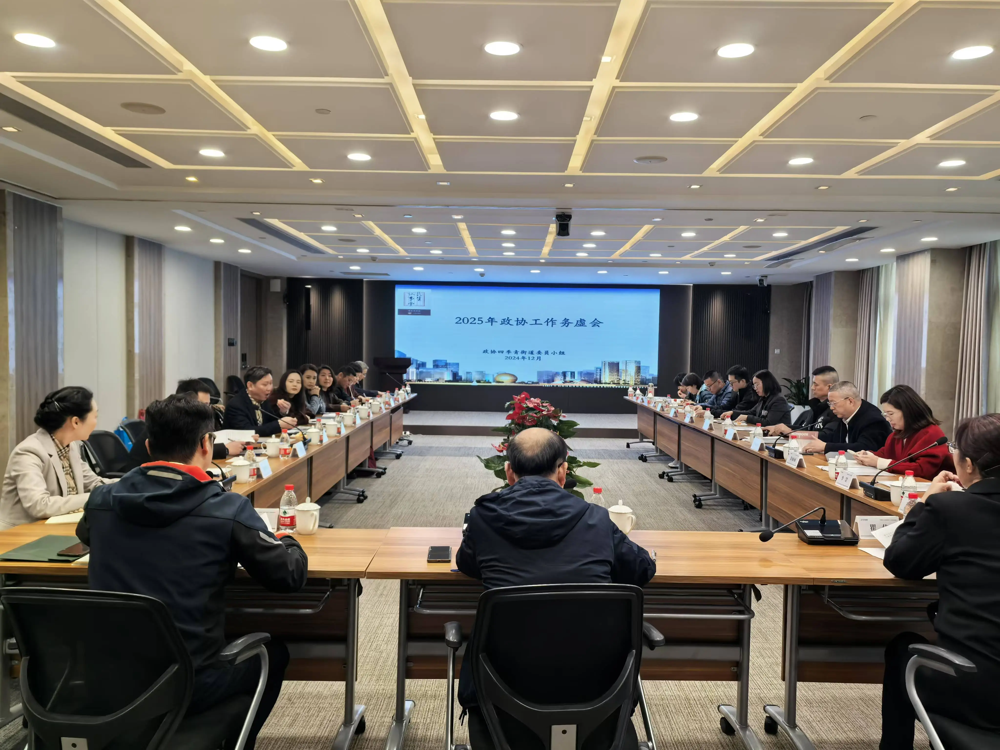
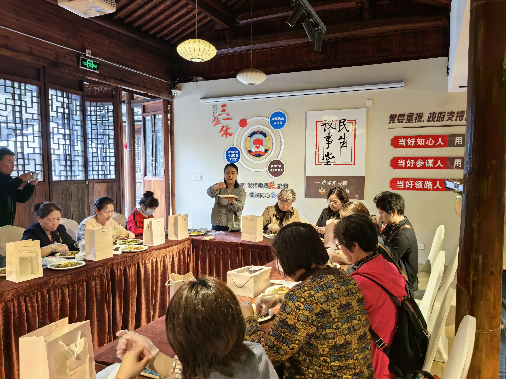
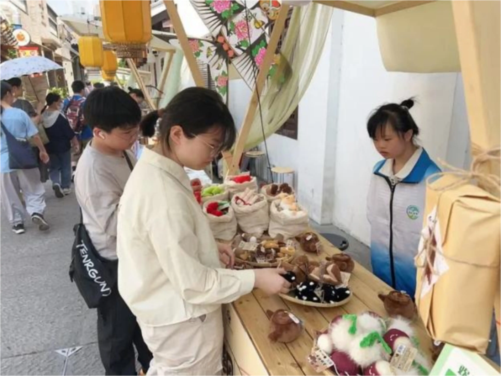

创新履职模式，服务民生发展
依托楼宇经济优势，打造服务企业的协商平台，助力营商环境优化，服务区域经济高质量发展。
传承优秀传统文化，开展宋韵文化体验活动，厚植文化底蕴，擦亮上城文化金名片。
聚焦"一老一小一残"，开展公益慈善服务，传递社会温暖，共建和谐美好家园。
围绕中心服务大局，助力高质量发展

围绕新质生产力发展，开展"投早投小投科技"专题协商，推动科技创新与产业升级深度融合。

邀请非遗传承人开展制作体验活动，弘扬中华优秀传统文化，让非遗技艺焕发新活力。

开展爱心义卖、走访慰问等活动，关爱弱势群体，传递社会正能量，共筑温暖之城。
严格评审，优中选优